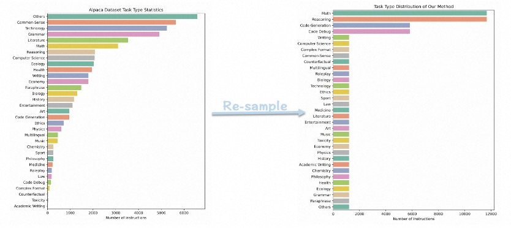

I received my master's degree at School of Computer Science, Fudan University in 2025. Prior to that, I received my bachelor's degree at School of Computer Science and Engineering, Southeast University in 2022. I was also a visiting student at the Text Intelligence Lab, Westlake University in 2023 and an exchange student at College of Electrical Engineering and Computer Science, National Taiwan University in 2019.
My research focuses on Post-training for LLMs, including: knowledge distillation, data synthesis, factuality and evaluation.
I'm always open to any new opportunities or collaborations! Feel free to reach out at yhyue22@m.fudan.edu.cn!
Research Intern @ Alibaba Cloud
Dec 2023 – Oct 2024
Supervised by Chengyu Wang
Research Interests: LLM Distillation, Instruction Tuning
Visiting Student @ NLP Lab, Westlake University
June 2023 – Oct 2023
Supervised by Cunxiang Wang and Yue Zhang
Research Interests: LLM Factuality
Visiting Student @ KSE Lab, Southeast University
Nov 2020 – Mar 2022
Supervised by Shirong Shen and Guilin Qi
Research Interests: Relation Extraction, Named Entity Recognition